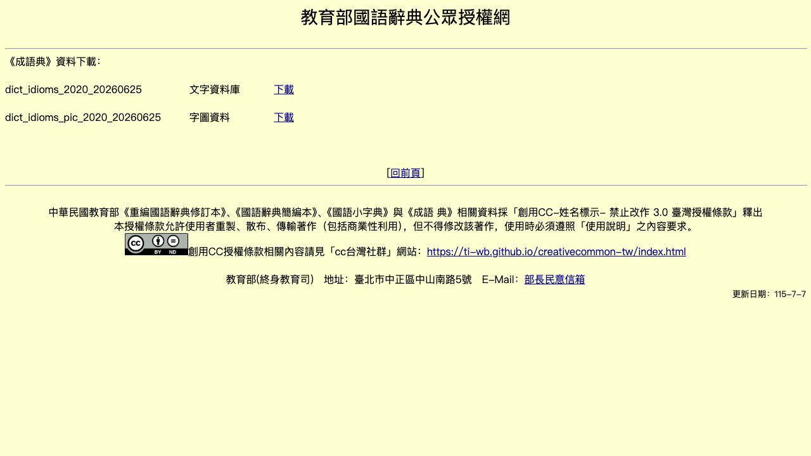
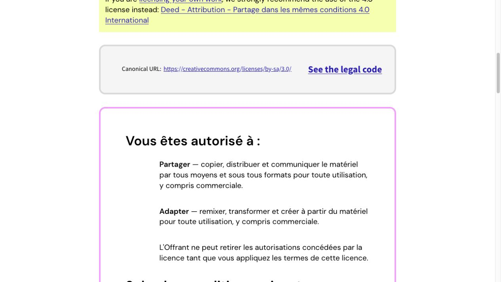
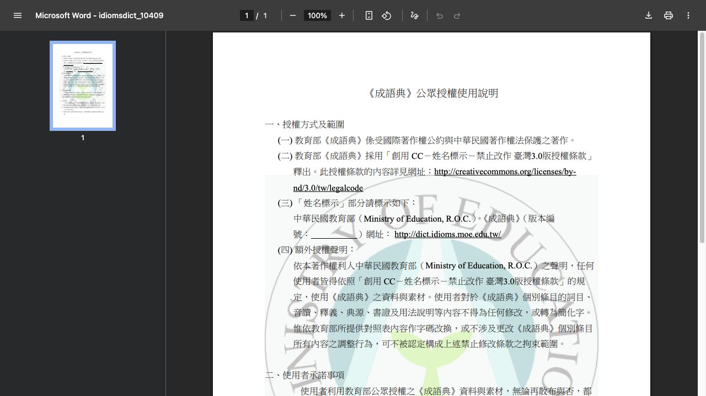
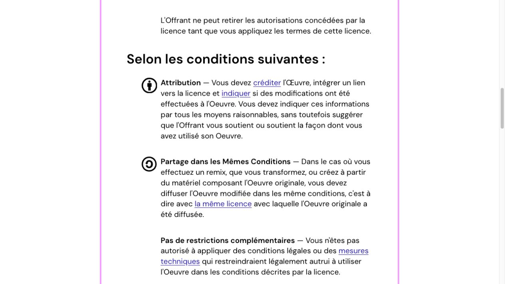

成语 Expressions idiomatiques · 版权与许可依据
Preuves des licences commerciales · Commercial-use license evidence
如何理解这些材料 · Comment les lire · How to read them
这些截图记录来源网页在截取时显示的许可条件。它们并不取代完整许可文本，也不代表所有网页内容都可自由使用。应用只按各自许可规定使用或参考相应材料。
Les captures attestent des conditions affichées lors de la consultation. Elles ne remplacent pas les licences complètes et ne constituent pas une autorisation générale pour tout contenu du site.
The screenshots record the terms displayed when captured. They do not replace the complete license texts or provide blanket clearance for all site content.
{kind=link}

01 · 教育部：商业使用与禁止衍生
Commercial use is allowed for unmodified material; derivative works are prohibited.
{kind=link}
02 · CFDICT：商业使用条件
Attribution on the app and presentation page, with share-alike requirements.
{kind=link}

03 · CC BY-SA：商业使用与改编
Utilisation commerciale et adaptation autorisées sous réserve des conditions BY-SA.
{kind=link}

04 · 教育部官方使用条件
Official PDF: entries may not be altered or converted to simplified characters.
{kind=link}

05 · CC BY-SA：署名与相同方式共享
Attribution, share-alike, and no additional restrictions.